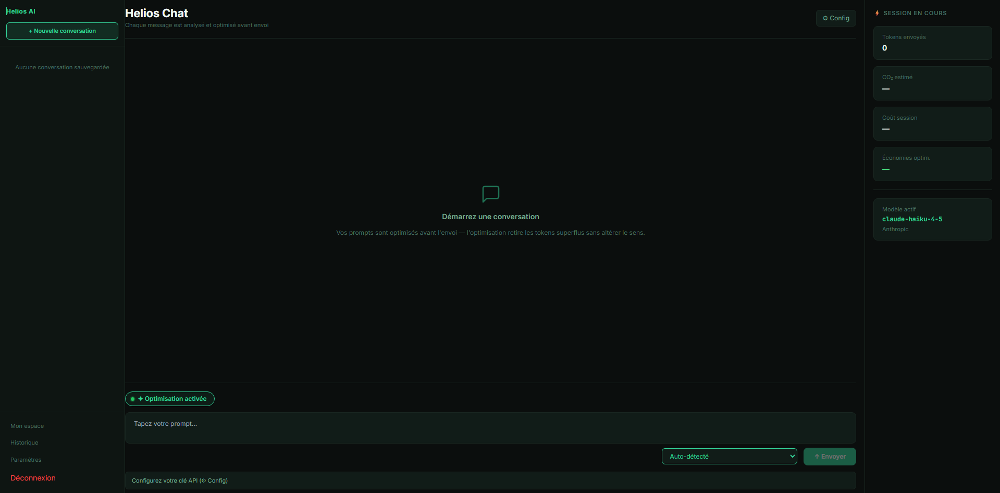

Transformer chaque utilisateur d'IA générative en power user.
Elle n'a jamais coûté aussi peu cher.
Pourtant la facture n'a jamais augmenté aussi vite.
Des modèles plus puissants. Des usages plus fréquents. Et des millions de tokens gaspillés à chaque conversation.
Quatre fuites, du prompt jusqu'à la planète :
Sources ×70 : Silicon Data (2026) · 0,42 Wh : arXiv 2505.09598 · 95 % : mesure interne Helios (39 364 conversations) · 565 TWh : Gartner
Un sous-agent résume l'historique à chaque tour pour compenser un modèle sans mémoire.
Le résumé n'est intégré que si une vérification automatique confirme qu'aucune décision, aucun chiffre, aucune info clé n'a été omis.
Routage multi-providers et efforts
Nettoyage heuristique, sans perte de qualité
Suivi économique + énergétique par message
Accessible à un non-développeur

Un grand merci à Aurélien Savart pour l'introdution auprès d'Infercom et le soutien jusqu'au bout ( même les journées de bugs, et pour les thérapie d'associés ).